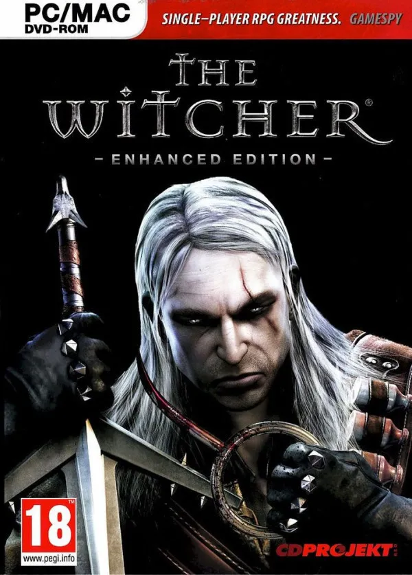
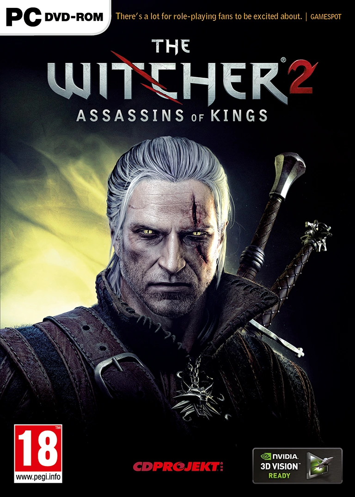
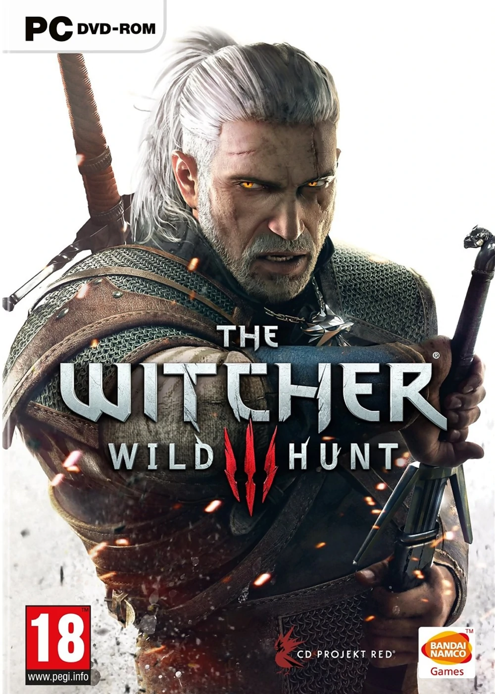

Witcher 1
The Witcher is a RPG game developed by CD PROJEKT RED. This is a beginning of a new story of the well know White Wolf. Game starts in Kaer Mohren while Geralt is barely alive when Vesemir, Eskel and Lambert find him. Nobody know what happened to him and even why he is alive. Thats the beginning of a new adventure. White Wolf does not recover anything from his life. The attack on Kaer Mohren causes main thread in Witcher 1 plot which is the chase after Azar Javed. I will not say anything more because discovering what happened to Geralt and making decisions through the game is the clue of the game. Maybe this game is old but its atmosphere great dialogues, amazing characters and interesting plot defending itself very well.
Witcher 2
The Witcher 2: Assassins of Kings is a second part of Geralt's adventure. Game is set almost immediately after the first, and follows from the attempt on King Foltest's life which occurred in the final cutscene. Geralt will once again face the mysterious witcher-like assassins, who appear to be connected with a character named in previews as the Kingslayer. Foltest's moves to capture the stronghold of the rebellious Baroness La Valette and "Geralt's personal theme, in which he's looking for his own identity". The narrative takes Geralt from Foltest's side, through an assault on La Valette Castle, then through Flotsam, Aedirn and finally to Loc Muinne where he has a final face off with a dragon.
Witcher 3
The Witcher 3: Wild Hunt is the third and final part of Geralt's journey. The world is in chaos. The fearsome Empire of Nilfgaard has invaded the helpless Northern Kingdoms. The once mighty who tried to use Geralt for their own gain are now gone. In these uncertain times, no one can say what fortune holds in store, who will bring peace to the world and who will cause it only misery. But a force darker and deadlier emerges. The petty men and women commanding tin-plated armies fail to understand that their conflict is child's play compared to the Wild Hunt, the otherworldly threat which now looms. These ghastly spectral riders have for ages plagued humankind, bringing misery to the world. This time the Wild Hunt seeks one person in particular: the one individual Destiny itself bestowed upon Geralt, the one soul Geralt considers kin.
Read More
The text in above paragraphs are mostly taken from wiki site. If you are interested after reading any of those paragraphs lets play or checkout fandom wiki: